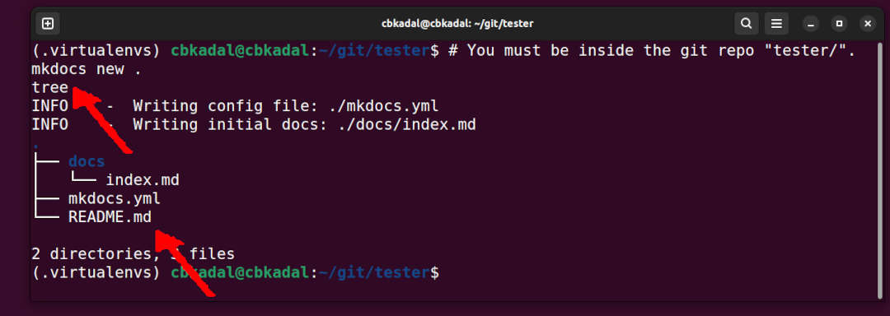

MkDocs
Create MkDocs inside repo "tester/"
- Check the file tree

Test from VirtualBox
File: mkdocs.yml
Replace file "mkdocs.yml" with the following.
copyright: Copyright © 2024-2024 VRTASS
site_name: MkDocs for Debian on VirtualBox/UTM
site_description: >
MkDocs for
a Virtual Debian Guest
on VirtualBox.
site_url: https://vrtass.github.io/tester/
nav:
- Home: index.md
- NAT Settings: NAT_settings.md
- GitHub: GitHub.md
- Debian Packages: Debs.md
- Python: Python.md
- MkDocs: MkDocs.md
- Listing: listing.md
- About: about.md
theme:
name: material
# font: false
font:
# text: Merriweather Sans
# text: Sans-serif
# text: Arial
text: Verdana
code: Red Hat Mono
logo: img/vrtass.jpg
favicon: img/favicon.ico
features:
- content.code.copy
- navigation.footer
palette:
#Â Dark Mode
- scheme: slate
toggle:
icon: material/weather-sunny
name: Dark mode
primary: green
accent: deep purple
# Light Mode
- scheme: default
toggle:
icon: material/weather-night
name: Light mode
primary: blue
accent: deep orange
markdown_extensions:
- admonition
- attr_list
- pymdownx.details
- pymdownx.emoji:
emoji_index: !!python/name:material.extensions.emoji.twemoji
emoji_generator: !!python/name:material.extensions.emoji.to_svg
- pymdownx.highlight:
anchor_linenums: true
linenums: false
line_spans: __span
pygments_lang_class: true
- pymdownx.inlinehilite
- pymdownx.snippets
- pymdownx.superfences:
custom_fences:
- name: mermaid
class: mermaid
format: !!python/name:pymdownx.superfences.fence_code_format
- pymdownx.tabbed:
alternate_style: true
extra:
custom_variable: "This is a custom variable from mkdocs.yml"
github_url: "https://github.com/vrtass/tester/"
social:
- icon: simple/youtube
link: https://youtube.com/
- icon: simple/linkedin
link: https://linkedin.com/
seo:
author: "The Virtual Ass"
description: >
MkDocs for
a Virtual Debian Guest
on VirtualBox.
keywords: "keyword1, keyword2"
extra_css:
- assets/styles.css
plugins:
- awesome-pages
- include-markdown
- macros
- search
# REVISI: Tue 03 Dec 2024 22:00
# REVISI: Tue 03 Dec 2024 20:00
# REVISI: Tue 03 Dec 2024 16:00
# REVISI: Tue 03 Dec 2024 14:00
# REVISI: Tue 03 Dec 2024 10:00
# STARTX: Tue 03 Dec 2024 09:00
Create Some Dummy Files
mkdir -pv assets/ configs/ img/ static/
touch about.md Debs.md GitHub.md index.md listing.md MkDocs.md NAT_settings.md Python.md
touch assets/styles.css configs/{gitignore,mkdocs.yml} static/hello.c
touch img/{cbkadal.jpg,dummy.jpg,mkdocs-new.jpg,venv.jpg,debM1-forward.jpg,favicon.ico,VBOX-NAT.jpg,vrtass.jpg}
Build the MkDocs site
- Build, commit, and push (master)
Deploy and Check Local
- Checkit out at https://vrtass.github.io/tester/, but your are not VRTASS!
- Replace all the dummy files.
Revision:
REVISI: Tue 03 Dec 2024 23:00 REVISI: Tue 03 Dec 2024 22:00 REVISI: Tue 03 Dec 2024 21:00 STARTX: Tue 03 Dec 2024 20:00